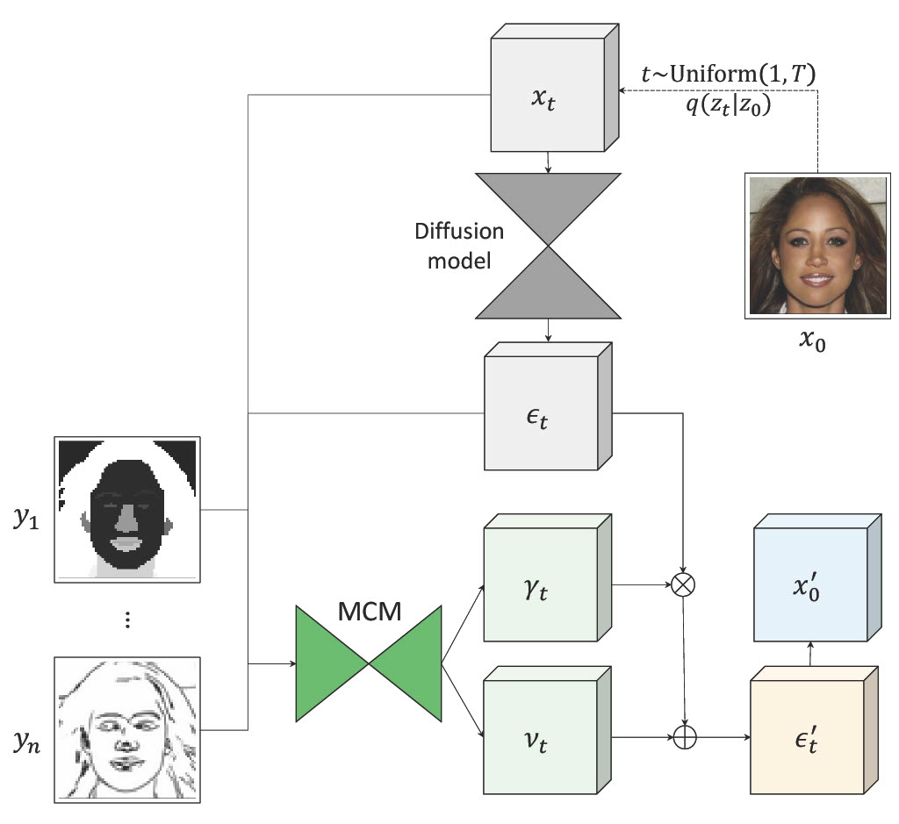
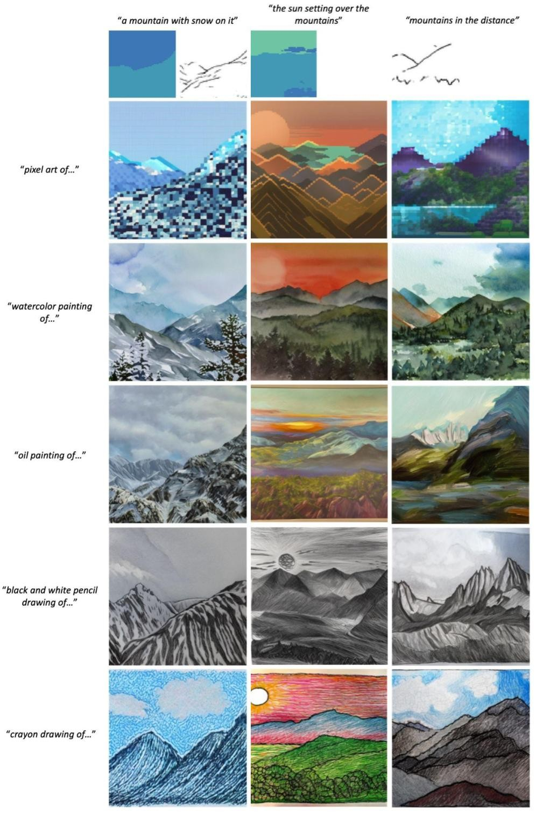
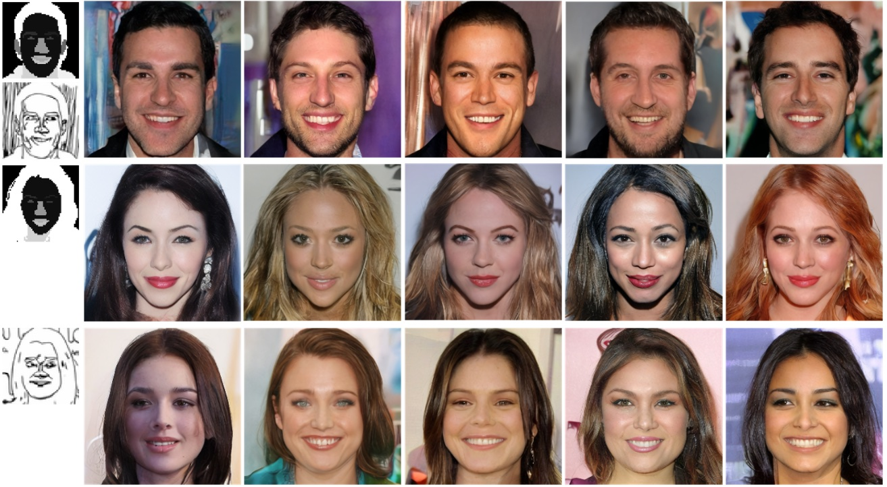
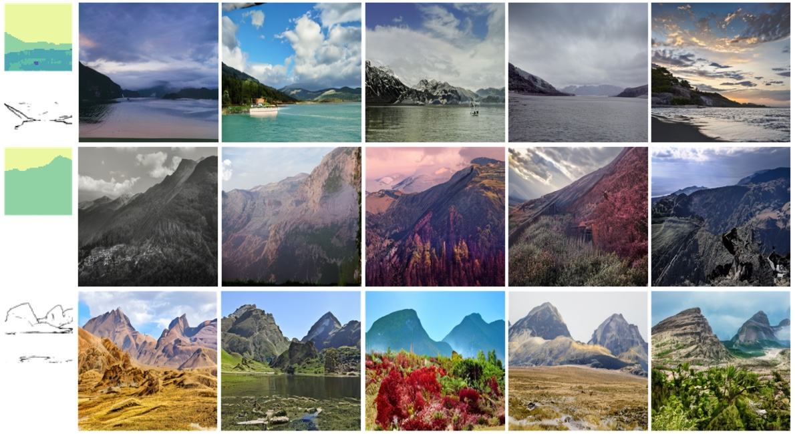

| tl;dr We introduce the multimodal conditioning module (MCM), a small modulation network that enables multimodal image synthesis using pretrained diffusion models without any updates to the diffusion model parameters. |
|
Results of using MCM to condition Stable Diffusion on new modalities (underlined). |
| We present multimodal conditioning modules (MCM) for enabling conditional image synthesis using pretrained diffusion models. Previous multimodal synthesis works rely on training networks from scratch or fine-tuning pretrained networks, both of which are computationally expensive for large, state-of-the-art diffusion models. Our method uses pretrained networks but does not require any updates to the diffusion network’s parameters. MCM is a small module trained to modulate the diffusion network’s predictions during sampling using 2D modalities (e.g., semantic segmentation maps, sketches) that were unseen during the original training of the diffusion model. We show that MCM enables user control over the spatial layout of the image and leads to increased control over the image generation process. Training MCM is cheap as it does not require gradients from the original diffusion net, consists of only ∼1% of the number of parameters of the base diffusion model, and is trained using only a limited number of training examples. We evaluate our method on unconditional and text-conditional models to demonstrate the improved control over the generated images and their alignment with respect to the conditioning inputs. |
|  |
|
| Given a small paired dataset of images and new target modalities, we train a small network that modulates the output of the diffusion model to generate images consistent with the provided conditions. At each timestep, we take the current image and get its predicted noise map from a frozen pretrained diffusion model. We concatenate both the image and predicted noise with the corresponding target modalities as input to MCM, which predicts a set of parameters used to modulate the predicted noise. The modulated noise is then used to compute the image for the next timestep. |
|  |
|
| We experiment with varying the artistic style of the images generated by applying MCM to Stable Diffusion. The text prompts are directly fed as input to SD, while segmentation maps and/or sketches are input to MCM. |
|  |
|
| We apply MCM to an unconditional LDM trained on CelebA and produce diverse results for any subset of modalities. |
|  |
|
| Visualization of the diversity in results for MCM applied to an unconditional LDM trained on Flickr Mountains. |
This template was originally made by Phillip Isola and Richard Zhang for a colorful ECCV project; the code can be found here.